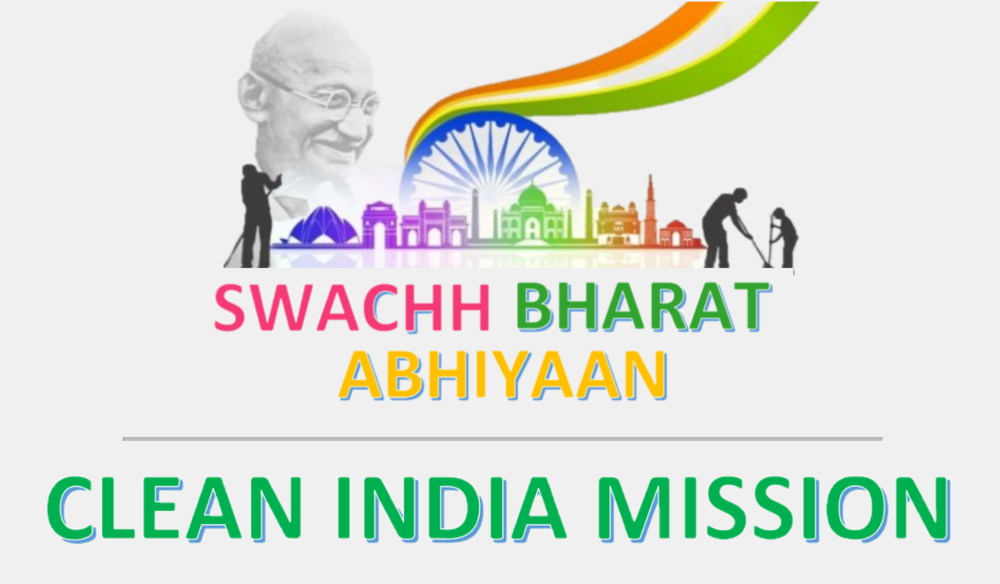

Swachh Bharat Abhiyan is A National Campaign By The Government of India Covering 4,041 Statutory Cities and Towns. To Clean The Streets Roads And Infrastructure of The Countr
The Campaign Was Officially Launched On 2,Oct,2014 At Rajghat, New Delhi, By Prime Misnister Narendra Modi.
It Is India's Biggest Ever Cleanliness Drive And 3 Million Govt Employees And School And College Students Of India Participated In This Event.